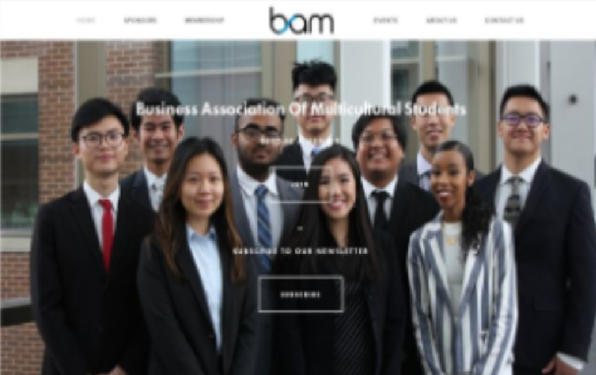
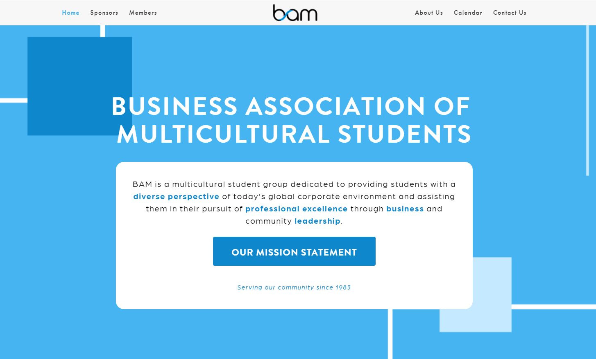
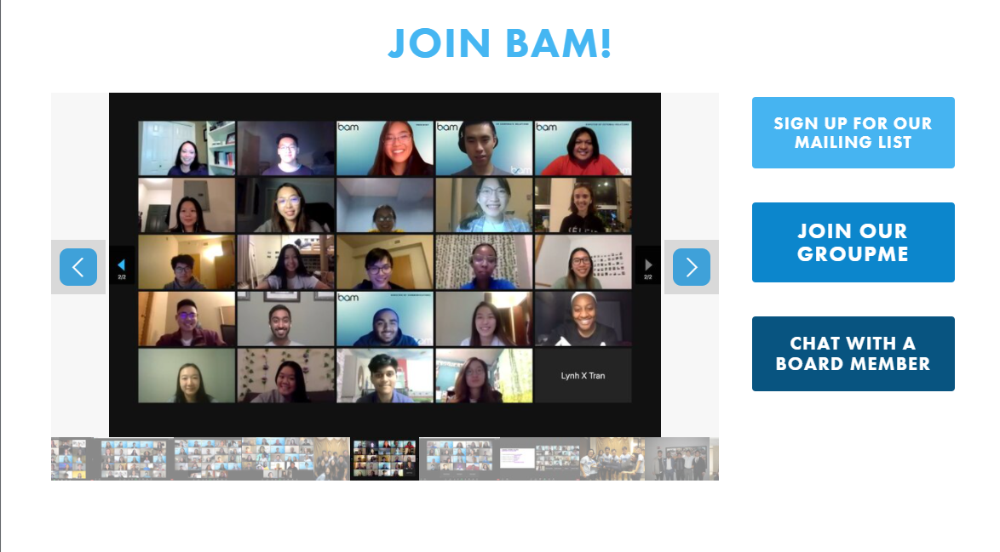
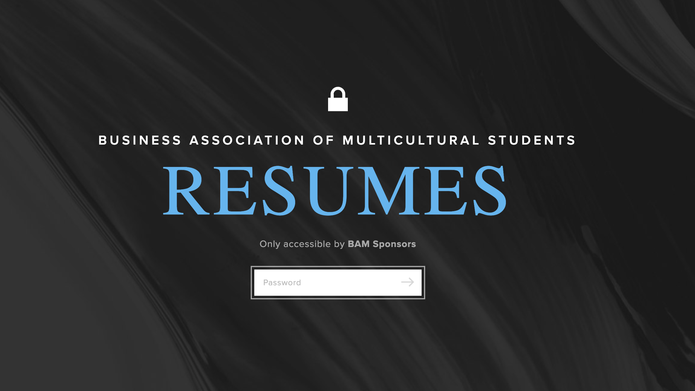

BAM
In January of 2021, I was elected the Director of Technology for the Business Association of Multicultural Students. During my term, here's some of the things I did...
The Website
Before
After


After getting feedback from BAM members, I was told that the large background picture made the text too difficult to see. Also, only having the board member's in the photo made some very dedicated members feel left out. The muted blue did not seem to match the liveliness of BAM's events. To resolve this, I updated the color palette and created some simple backgrounds that used those colors, and created a gallary carousel.
Digital Resume System
Previously, each semester the BAM board would collect pdf's of each members resume and compile them into one giant pdf to be sent to our sponsors. This was a very tedious task that would take the board about a week to complete. Also, the issue of having out of date resumes I wrote a Google App Scripts to automate the resume collection process. The script would place the students resume in the appropriate section and rename each resume with the student's name and the date (ex. LynhTran_Fall21.pdf). The Sponsors would have access to these resumes as they are sent in during the semester on their own private portal, with the password to access changing every month. The sponsor view would have folders representing each semester with the respective resumes in each.
Alumni Database & Attendence Tracking
Having a database of past BAM members could be very beneficial for finding speakers, sponsors, and job opprotunities for future BAM members. This is why we decided to create an alumni database. This was a 3 month process of attempting to reach out to members of the last 10 years using the little information we could find from the university and past records. The lack of resources also demonstrated we needed a more organized way of tracking attendance to our events. We created a new system where before entering each event, there would be a QR code to sign in. I then created a Google App Script that would compile all the sign in entries and automatically update charts and tables for board members to see. This helped us recognize what events were successful, what students we were attracting, and which marketing strategies were most sucessful.